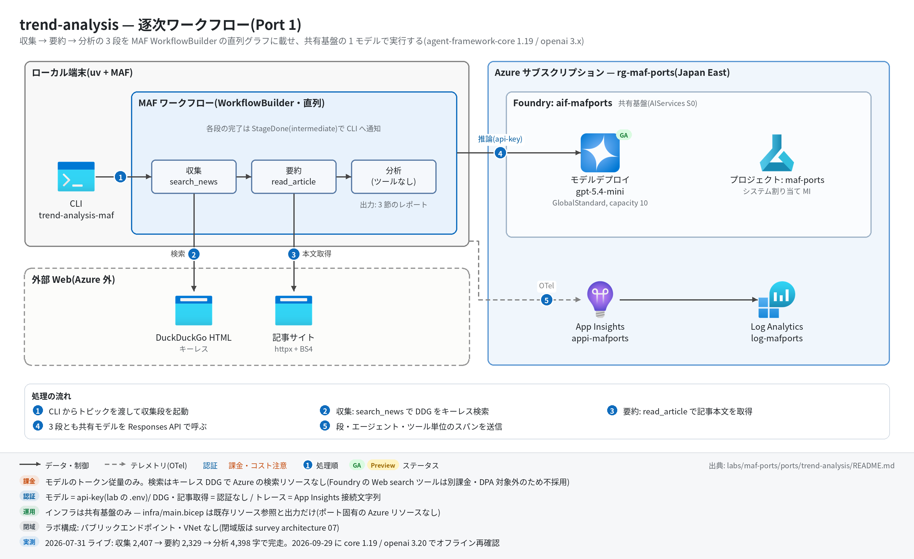

trend-analysis 実行ガイド
このページの内容
対象:
labs/maf-ports/ports/trend-analysis/(Port 1・パターン: 逐次ワークフロー — 収集 → 要約 → 分析の 3 段直列)
最終確認: 2026-09-29 オフライン(9 passed・ruff clean・依存 agent-framework-core 1.19.0 / agent-framework-openai 1.14.4 / openai 3.20.0)/ ライブ: 2026-07-31(当時の構成 core 1.12.1 / openai 2.51.0。Azure リソースは削除済み — 再デプロイ手順は §5)
正は本 Markdown。 人間用 HTML(同じディレクトリのrunbook.html)はpython3 labs/tools/build_runbooks.pyで生成する(HTML は直接編集しない)。設計判断と移植の学びは README。
1. このパターンで確かめること
- トピック 1 つから、
CollectorExecutor(search_news ツール)→SummarizerExecutor(read_article ツール)→AnalyzerExecutor(ツールなし)がこの順に 1 回ずつ動き、前段の出力が次段のプロンプトに連鎖して、## Emerging trends/## Startup opportunities/## Risks & unknownsの 3 節を持つレポートが出ること。 - 段の完了が
stream=Trueの intermediate イベント(StageDone)として CLI に流れ、トレース上も段(executor.process)・エージェント(invoke_agent)・ツール(execute_tool)単位に切れていること。 - 技術選定上の意味: この規模の直列処理をグラフ化する価値は「行数」ではなく観測性と進捗イベントにある(README の学び 1・4)。検索を Foundry の Web search ツールでなく自前キーレス DDG にした理由(DPA 対象外・別課金)は学び 2。
2. 構成

topic ──▶ CollectorExecutor ──▶ SummarizerExecutor ──▶ AnalyzerExecutor ──▶ TrendReport
(search_news tool) (read_article tool) (ツールなし)
進捗: collector / summarizer の yield_output → type="intermediate"(StageDone)→ CLI の stderr| コンポーネント | 役割 | 課金 |
|---|---|---|
MAF Workflow(ローカル、workflow.py) |
3 Executor の直列グラフ(WorkflowBuilder + add_edge ×2) |
なし |
MAF Agent ×3(agents.py) |
news_collector / summary_writer / trend_analyzer。OpenAIChatClient(Responses API)で共有基盤のモデルを呼ぶ |
— |
| モデルデプロイ(共有基盤、既定 gpt-5.4-mini) | 3 役割で 1 デプロイを共用 | トークン従量 |
search_news(search.py / tools.py) |
DuckDuckGo HTML をキーレスで検索 | なし(外部サイト) |
read_article(tools.py) |
記事 HTML を httpx で取得し本文を 6,000 字に切り詰め | なし(外部サイト) |
| App Insights(共有基盤) | OTel トレースの送信先(任意) | 取り込み量従量 |
3. 前提
| 区分 | 必要なもの | 備考 |
|---|---|---|
| ツール | uv(Python 3.11 以上。uv が取得。検証は 3.13) | オフライン実行はこれだけ |
| Azure(ライブのみ) | 共有基盤(infra/shared.bicep)のみ。本ポート固有のリソースはない(infra/main.bicep は existing 参照+出力だけ) |
モデルのトークン従量+トレース取り込み |
| 権限 | モデル呼び出しは api-key(FOUNDRY_API_KEY)なのでデータプレーンの RBAC は不要。共有基盤のデプロイ権限は 共有基盤の実行ガイド §3 |
roles.bicep(MI 向け)も本ポートには不要 |
| ネットワーク(ライブのみ) | html.duckduckgo.com と記事サイトへの外向き HTTPS |
社内プロキシ下では DDG がブロックされやすい(§9) |
環境変数(labs/maf-ports/.env。雛形は .env.example。ライブ実行時のみ必要。読み込み順はカレントの .env → lab ルートの .env で、既にシェルにある値が優先):
| 変数 | 用途 | 取得元 |
|---|---|---|
FOUNDRY_OPENAI_V1_ENDPOINT |
モデル呼び出し先(https://<foundry>.openai.azure.com/openai/v1)。必須 |
shared.bicep の出力 openaiV1Endpoint |
FOUNDRY_MODEL |
モデルデプロイ名(既定 gpt-5.4-mini)。必須 | shared.bicep の出力 modelDeploymentName |
FOUNDRY_API_KEY |
api-key 認証。必須 | az cognitiveservices account keys list -n <foundryName> -g <rg> --query key1 -o tsv |
APPLICATIONINSIGHTS_CONNECTION_STRING |
トレース送信先。任意(未設定ならトレース無効で実行は続く) | shared.bicep の出力 appInsightsConnectionString |
4. オフライン実行(Azure 不要・無料)
cd labs/maf-ports/ports/trend-analysis
uv sync --extra dev
uv run pytest # 期待: 9 passed, 1 deselected(live は既定で除外。ネットワーク不要)
uv run ruff check . # 期待: All checks passed!(図生成スクリプト docs/architecture.py も対象)オフラインテストが固定している主な挙動:
- 3 段がこの順に 1 回ずつ呼ばれ、トピック → 収集結果 → 要約結果がプロンプトに連鎖し、分析にもトピックが渡る(
test_sequential_flow_and_prompt_chaining) - 進捗イベントは
["collect", "summarize"]の 2 件、最終出力TrendReportに全段の出力が残る(同上) -
streamなしのworkflow.run()でもTrendReportが取れる(test_run_without_stream_returns_output) - DDG の
/l/?uddg=リダイレクトを実 URL に解決し、リンクのない結果・解決不能な href を捨てる(test_parse_ddg_results_resolves_redirects/test_parse_ddg_skips_unresolvable_hrefs) - read_article が nav / script を除去して 6,000 字で切り詰め、HTTP エラーは例外でなく
(fetch failed: HTTP 404)の文字列で返す(test_read_article_strips_boilerplate_and_truncates/test_read_article_reports_http_error) - クロージャで作ったツールでも
__name__・型ヒント・docstring が保たれ、MAF がツールスキーマを推論できる(test_tool_signatures_are_introspectable)
5. ライブ実行(Azure 必要・課金あり)
5.1 デプロイ
# 共有基盤が未作成なら先に作る(→ labs/maf-ports/infra/docs/runbook.md §5)。本ポート固有のリソースはない。
# 任意: 共有基盤の存在確認とエンドポイント取得(existing 参照+出力のみのテンプレート)
cd labs/maf-ports/ports/trend-analysis
az deployment group create -g <rg> -f infra/main.bicep -p baseName=<baseName> \
--query properties.outputs -o json # 期待: openaiV1Endpoint / projectEndpoint が返る5.2 実行
uv sync --extra dev --extra live # live = azure-monitor-opentelemetry(トレース送信)
uv run trend-analysis-maf "AI coding agents for enterprises"
uv run trend-analysis-maf --json "AI coding agents for enterprises" > report.json # 全段の出力を JSON で
uv run pytest -m live # ライブスモーク(topic "AI coding agents"。1 passed が期待)期待される出力の例(値は実行ごとに変わる。文字数は 2026-07-31 のライブ実測):
tracing: App Insights 有効 ← stderr(接続文字列があり live extra 導入時のみ)
[collect] done (2407 chars) ← stderr
[summarize] done (2329 chars) ← stderr
## Emerging trends ← stdout(analysis_md。この例は 4,398 chars)
- ...
## Startup opportunities
- ...
## Risks & unknowns
- ...--json の形: {"topic": ..., "articles_md": ..., "summaries_md": ..., "analysis_md": ...}。終了コードは 正常 0 / 環境変数不足 2 / レポートなし 1。
6. 確認観点
| 確認 | # | 観点 | 確認方法 | 期待結果 |
|---|---|---|---|---|
| 1 | 正常系: 3 段完走 | §5.2 の CLI を実行 | stderr に [collect] done → [summarize] done の順で出て、stdout に 3 節(Emerging trends / Startup opportunities / Risks & unknowns)の Markdown |
|
| 2 | プロンプト連鎖(段間の受け渡し) | --json の出力で articles_md と summaries_md を見比べる |
articles_md の記事 URL が summaries_md にも残り、analysis_md の根拠が要約由来になっている(汎用論だけになっていない) |
|
| 3 | ツール呼び出し | トレース(§7)で execute_tool の件数を数える |
execute_tool search_news が 2〜3 件(指示は 2〜3 クエリ)、execute_tool read_article が 3〜5 件前後 |
|
| 4 | 異常系: 設定不足 | FOUNDRY_API_KEY= uv run trend-analysis-maf x(空文字はシェル側の値が優先され .env で上書きされない) |
終了コード 2、stderr に error: 環境変数が未設定: FOUNDRY_API_KEY(labs/maf-ports/.env を確認。雛形は .env.example) |
|
| 5 | 異常系: 検索・取得の失敗 | DDG が 202/403 を返す環境(プロキシ下など)で実行、または記事が 404 | ワークフローは落ちずに完走する。DDG 失敗時はツール例外がモデルに Error: Function failed. として返り(2026-09-29 モックで確認・ライブ未確認)、収集結果が薄くなる。記事取得失敗は (fetch failed: ...) を受けた summarizer がスニペットから要約する |
|
| 6 | 観測: トレース着信 | §7 の KQL | invoke_agent 3 種(news_collector / summary_writer / trend_analyzer)、executor.process 3 種、workflow.run 1 件が数分以内に dependencies に出る |
|
| 7 | コスト | §7 のトークン集計 KQL / ポータルのデプロイのメトリック | 1 回の実行 = chat 呼び出しが最小 5 回(3 役割+ツール往復 2 回。モデルがツールを分けて呼ぶほど増える)。検索・記事取得は無料 |
|
| 8 | 後片付け | 本ポート固有のリソースはない | 共有基盤を使い終えたら 共有基盤の実行ガイド §8 で RG ごと削除 |
7. トレース・評価の確認
# スパン名ごとの件数(送信から着信まで数分かかることがある)
az monitor app-insights query --app appi-<baseName> -g <rg> \
--analytics-query "dependencies | where timestamp > ago(30m) | summarize count() by name"
# トークン使用量(chat スパンの GenAI 属性)
az monitor app-insights query --app appi-<baseName> -g <rg> \
--analytics-query "dependencies | where timestamp > ago(30m) and name startswith 'chat' | summarize input=sum(toint(customDimensions['gen_ai.usage.input_tokens'])), output=sum(toint(customDimensions['gen_ai.usage.output_tokens']))"- 期待するスパン名(2026-09-29 に agent-framework-core 1.19.0 のインメモリ OTel で確認):
workflow.build/workflow.run/executor.process collector|summarizer|analyzer/invoke_agent news_collector|summary_writer|trend_analyzer/chat <デプロイ名>/execute_tool search_news|read_article/edge_group.process .../message.send。ポータルではプロジェクトの「トレース」(共有基盤の AppInsights 接続経由)でも見える。 - 評価:
tests/eval_dataset.jsonl(5 ケース、topic+expected_traits)は期待する性質の記述。クラウド評価は未実装(スコアの合否ラインは設けない方針。評価 API の使い方は Port 9 critique-loop)。
8. 片付け
# 本ポート固有のリソースはない。共有基盤ごと消す場合:
az group delete -n <rg> --yes --no-wait- 同じ
baseNameで作り直す場合は Foundry アカウントの soft delete(48 時間)に注意 — 共有基盤の実行ガイド §8。 - ローカルの生成物(
report.jsonなど)は手で削除する。
9. トラブルシューティング
| 症状 | 原因 | 対処 |
|---|---|---|
error: 環境変数が未設定: ...(終了コード 2) |
labs/maf-ports/.env がない / 変数名の誤り |
.env.example をコピーし、共有基盤の出力を転記(共有基盤の実行ガイド §5.5) |
401 / invalid api key |
キーの誤り、または Foundry アカウントでローカル認証が無効(disableLocalAuth: true) |
az cognitiveservices account keys list で再取得。共有基盤は disableLocalAuth: false が前提 |
404 DeploymentNotFound |
FOUNDRY_MODEL がデプロイ名と一致しない |
az cognitiveservices account deployment list -n <foundryName> -g <rg> -o table の名前に合わせる |
| 429 Too Many Requests | 共有基盤の容量(modelCapacity 既定 10 = 10K TPM)超過 |
少し待って再実行。常用するなら shared.bicep の modelCapacity を上げて再デプロイ |
収集結果が空・Error: Function failed. 相当 |
DDG の HTML エンドポイントが 202/403 でブロック(レート制限・プロキシ) | 時間をおく / 別ネットワークで実行。恒久策は検索層の差し替え(README 学び 2 の比較を参照) |
tracing: App Insights 有効 が出ない |
接続文字列が未設定、または --extra live 未導入(警告ログのみで実行は続く) |
uv sync --extra dev --extra live と APPLICATIONINSIGHTS_CONNECTION_STRING を確認 |
| KQL で 0 件 | 着信遅延 / 別の App Insights を見ている | 数分待つ。--app が .env の接続文字列と同じリソースか確認 |
10. 関連・更新履歴
- 設計判断と学び: README
- 共有基盤(デプロイ・.env・RBAC・削除): 共有基盤の実行ガイド
- 観測性・評価の機能状況: features/05-observability-evaluation.md
- 次のパターン: mixture-of-agents(Port 2・並列+集約)
| 日付 | 内容 |
|---|---|
| 2026-09-29 | 初版。構成図を v2(日本語・処理順バッジ)に更新(依存を agent-framework-core 1.19.0 / openai 3.20.0 に更新、コード改修なし。モックで Responses API の要求形とスパン名を再確認) |